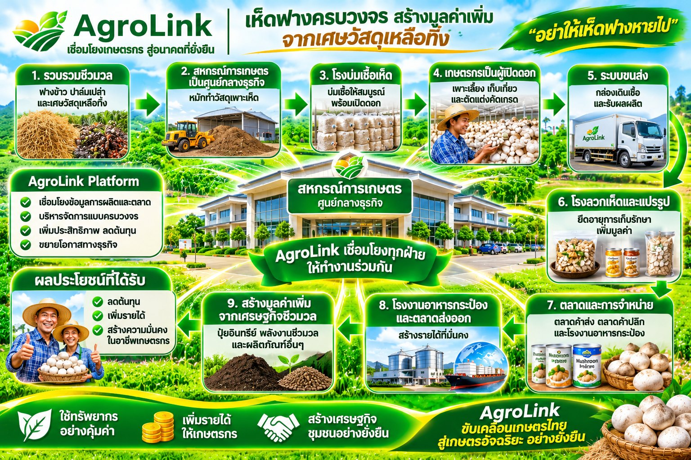
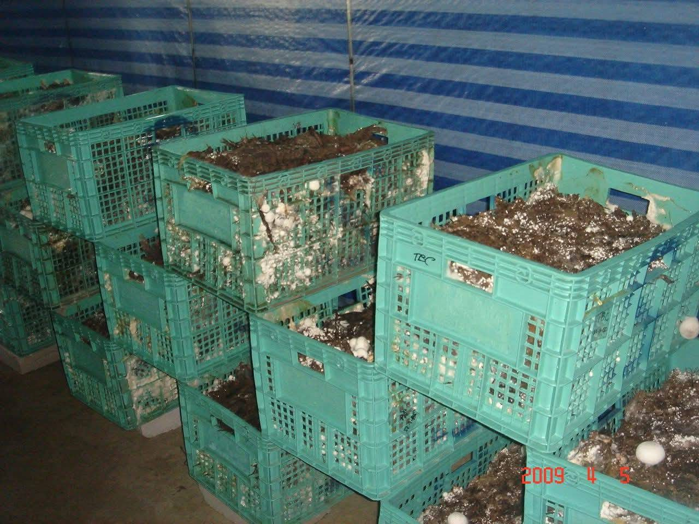
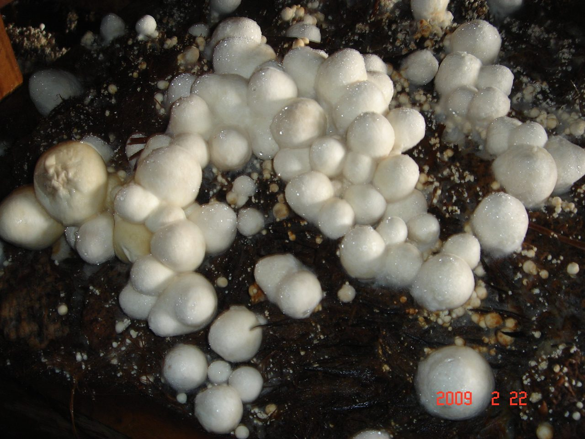
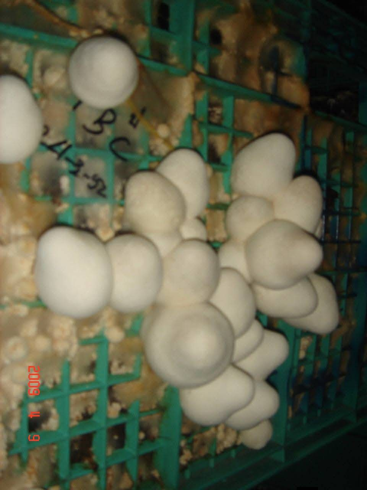
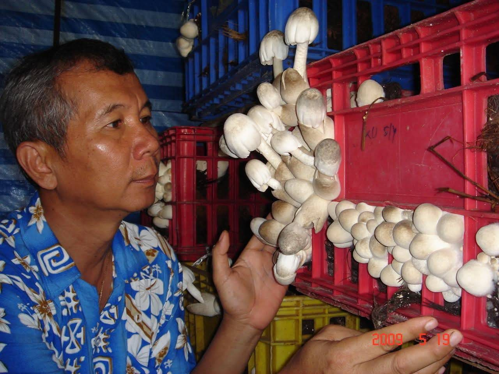

การผลิตเห็ดฟางแบบใหม่ “แบบอานนท์ 2589”: สหกรณ์ผลิตกล่องเพาะ สมาชิกเปิดดอก
เปลี่ยนฟางข้าว ทะลายปาล์ม ผักตบชวา กากมัน รำข้าว กากฝ้าย และเศษวัสดุการเกษตรเหลือทิ้ง ให้เป็นเห็ดฟางคุณภาพ — สหกรณ์ทำหน้าที่ศูนย์กลางเตรียมวัสดุและผลิตกล่องเพาะ สมาชิกนำกล่องไปเปิดดอก แล้วส่งดอกเห็ดกลับมาให้สหกรณ์รวบรวมจำหน่าย


แยกงานยาก–งานง่าย ให้แต่ละฝ่ายทำในส่วนที่ถนัด
หัวใจของแบบอานนท์ 2589 คือ “การแยกกระบวนการ” งานที่ต้องใช้เครื่องจักร พลังงาน และความรู้เฉพาะ (หมักวัสดุ อบฆ่าเชื้อ ใส่เชื้อ บ่มเส้นใย) ทำรวมที่ศูนย์ของสหกรณ์ ส่วนงานดูแลการออกดอกที่ใช้แรงงานน้อย ให้สมาชิกทำที่บ้าน
- สหกรณ์ลงทุนจุดเดียว ใช้เครื่องจักรแทนแรงงานคน
- สมาชิกไม่ต้องสร้างโรงเรือนราคาแพง แค่พื้นที่เปิดดอกที่กันลมได้
- กล่องที่บ่มเส้นใยแล้วขนส่งได้ไกลราว 150 กิโลเมตร
- ใช้ได้กับวัสดุเหลือทิ้งหลายชนิด ไม่ต้องพึ่งฟางข้าวอย่างเดียว
เห็ดฟาง: กิจกรรมเพิ่มมูลค่าเศษวัสดุการเกษตรที่ตลาดรองรับ
เหมาะกับสหกรณ์ที่มีสมาชิกจำนวนมากและมีวัสดุเหลือใช้ในพื้นที่
เพิ่มมูลค่าเศษวัสดุแทนการเผา
ฟางข้าว ทะลายปาล์ม ผักตบชวา กากมัน ที่เคยถูกเผาหรือทิ้ง กลายเป็นวัตถุดิบเพาะเห็ดที่สร้างรายได้ ช่วยลดหมอกควันและ PM2.5
ตลาดในประเทศยังขาดแคลน
อ.อานนท์ประเมินว่าคนไทยบริโภคเห็ดฟางราว 1 ล้านตันต่อปี แต่ผลิตได้ไม่เกิน 350,000 ตัน ส่วนที่เหลือต้องนำเข้า
สมาชิกลงทุนต่ำ
สมาชิกไม่ต้องหมักวัสดุ อบไอน้ำ หรือทำเชื้อเอง แค่เตรียมพื้นที่เปิดดอกง่าย ๆ ใช้แรงงานในครัวเรือนดูแล
รอบการผลิตสั้น หมุนเวียนรายได้เร็ว
เห็ดฟางเป็นเห็ดที่โตเร็ว ใช้เวลาไม่กี่สัปดาห์ต่อรอบ สมาชิกจึงมีรายได้หมุนเวียนต่อเนื่องระหว่างฤดูทำนา
วัสดุหลังเก็บดอกกลับคืนสู่ดิน
อ.อานนท์ชี้ว่าเห็ดเปลี่ยนเศษวัสดุการเกษตรให้เป็นปุ๋ย ดิน และอาหารที่มีคุณค่า วัสดุเพาะเก่านำไปหมักเป็นปุ๋ยบำรุงดินต่อได้
สร้างธุรกิจใหม่ให้สหกรณ์
สหกรณ์มีรายได้จากการขายกล่องเพาะและการรวบรวม แปรรูป จำหน่ายเห็ด เป็นกิจกรรมเศรษฐกิจหมุนเวียนแบบ BCG
เส้นทางการเพาะเห็ดฟางไทย จากกองฟางกลางแจ้งสู่ระบบศูนย์กลาง–เครือข่าย
สรุปจากประสบการณ์กว่า 50 ปีของ อ.อานนท์ ผู้พัฒนาวิธีเพาะเห็ดฟางในโรงเรือนที่ใช้กันทั่วประเทศ
- พ.ศ. 2489–2510
แบบกองสูง (กลางแจ้ง)
ใช้ฟางปริมาณมาก ออกดอกภายใน 15–20 วัน แต่เชื้อโรคสะสมในพื้นที่เดิม ต้องย้ายที่เพาะไปเรื่อย ๆ
- ยุคถัดมา
แบบกองเตี้ย
ใช้วัสดุน้อยลงราว 10 เท่า และใช้วัสดุได้หลากหลาย เช่น ฟาง ขี้ฝ้าย ผักตบชวา กากถั่ว กากมัน ทะลายปาล์มเก่า
- พ.ศ. 2517
แบบอานนท์ 2517 (โรงเรือน)
พัฒนาเพื่อผลิตส่งออกฮ่องกง เพาะในโรงเรือนได้ทั้งปี ปัจจุบันใช้แพร่หลายทั่วประเทศ แต่มีต้นทุนเชื้อเพลิงและแรงงานสูง ความร้อนสูญเสียผ่านผนังพลาสติก ชั้นถาวรใส่วัสดุได้น้อย และควบคุมสภาพแวดล้อมได้ยาก
- พ.ศ. 2552
แบบอานนท์ 2552 (แยกกระบวนการ)
หมักวัสดุนอกโรงเรือน บรรจุลงลังที่เคลื่อนย้ายได้ แล้วเลี้ยงเชื้อและพาสเจอไรซ์ในห้องเฉพาะ ประหยัดเชื้อเพลิง ใส่วัสดุได้มากขึ้น ใช้เครื่องจักรได้ เหมาะกับการทำเป็นกลุ่ม
- แนวทางใหม่
แบบอานนท์ 2589 (ศูนย์กลาง–เครือข่าย)
กลับกองด้วยเครื่องจักร บรรจุลังหรือกล่องโฟม คลุมผ้าใบอบไอน้ำ ลงทุนและใช้พลังงานต่ำ แล้วส่งกล่องที่บ่มเส้นใยแล้วไปเปิดดอกที่บ้านสมาชิก ชื่อ “2589” สะท้อนว่าอาจใช้เวลาราว 20 ปีกว่าวิธีนี้จะแพร่หลายในประเทศไทย
โรงเรือนแบบเดิม กับ แบบใหม่ ต่างกันอย่างไร
จุดที่ทำให้ต้นทุนสูงในแบบเดิม คือเชื้อเพลิงและแรงงาน แบบใหม่แก้ทั้งสองจุดด้วยการแยกงานและใช้ภาชนะเคลื่อนย้ายได้
| ประเด็น | โรงเรือนแบบเดิม (แบบ 2517) | แบบใหม่ (แบบ 2589) |
|---|---|---|
| การหมักวัสดุ | แบบเดิมหมักนอกโรงเรือน แล้วใช้แรงงานขนขึ้นชั้นในโรงเรือน (งานหนัก) | แบบใหม่หมักกลางแจ้ง กลับกองบ่อย ๆ ด้วยเครื่องจักร เช่น รถตักขนาดเล็ก |
| ภาชนะเพาะ | แบบเดิมชั้นถาวรในโรงเรือน ใส่วัสดุได้น้อย | แบบใหม่ลังหรือกล่องโฟมความหนาแน่นสูง เคลื่อนย้ายได้ วางซ้อนกัน |
| การอบฆ่าเชื้อ | แบบเดิมอบทั้งโรงเรือน ความร้อนสูญเสียผ่านผนังพลาสติก | แบบใหม่คลุมผ้าใบอบเฉพาะกองลัง ใช้ความร้อนเดิมของวัสดุหมัก (45–54°C) |
| การเปิดดอก | แบบเดิมอยู่ในโรงเรือนเดิมตลอดรอบการผลิต | แบบใหม่บ่มเส้นใยที่ศูนย์ แล้วแยกไปเปิดดอกที่บ้านสมาชิก |
| ผู้ทำงาน | แบบเดิมเจ้าของโรงเรือนทำเองทุกขั้นตอน | แบบใหม่สหกรณ์ทำงานส่วนกลาง สมาชิกดูแลการออกดอกและเก็บเกี่ยว |
| การขยายผล | แบบเดิมขยายได้ตามจำนวนโรงเรือนที่ลงทุน | แบบใหม่ขยายได้ตามจำนวนสมาชิกในเครือข่าย |
สหกรณ์เป็นศูนย์กลาง สมาชิกเป็นเครือข่ายเปิดดอก
สหกรณ์ / กลุ่มเกษตรกร
- รับซื้อฟางข้าวจากสมาชิก และจัดหาวัสดุอื่น เช่น ทะลายปาล์ม กากมัน ผักตบชวา รำข้าว
- หมักวัสดุและอบไอน้ำฆ่าเชื้อด้วยเครื่องจักรที่ศูนย์
- จัดหาเชื้อเห็ดฟางคุณภาพ ใส่เชื้อ และบ่มเส้นใยให้เดินเต็มกล่อง
- จัดรถส่งกล่องเพาะถึงบ้านสมาชิก และรับดอกเห็ดสดกลับ
- รวบรวม คัดเกรด แปรรูป (ลวกแช่แข็ง ดองซีอิ๊ว) และหาตลาด
สมาชิกสหกรณ์
- ส่งฟางข้าวให้สหกรณ์แทนการเผา
- เตรียมพื้นที่เปิดดอกง่าย ๆ ที่กันลมได้ ไม่ต้องสร้างโรงเรือนราคาแพง
- รับกล่องเพาะ ดูแลน้ำและความชื้นให้เห็ดออกดอก
- เก็บดอกเห็ดตามมาตรฐานที่สหกรณ์กำหนด แล้วส่งขายให้สหกรณ์
- นำวัสดุเพาะเก่าไปหมักเป็นปุ๋ยบำรุงดิน
วงจรการทำงานในแต่ละรอบ
- 1สมาชิกส่งฟาง
- 2สหกรณ์หมักและอบไอน้ำ
- 3ใส่เชื้อ บ่มเส้นใย
- 4รถส่งกล่องถึงบ้านสมาชิก
- 5สมาชิกเปิดดอก เก็บเกี่ยว
- 6สหกรณ์รวบรวม แปรรูป จำหน่าย
เมื่อครบรอบ สหกรณ์เริ่มผลิตกล่องชุดใหม่ สมาชิกนำวัสดุเพาะเก่าไปทำปุ๋ยหมัก แล้วรับกล่องชุดถัดไป
8 ขั้นตอน จากเศษวัสดุสู่ดอกเห็ดฟาง
ค่าอุณหภูมิและระยะเวลาเป็นแนวทางจาก อ.อานนท์ ควรทดลองปรับให้เหมาะกับวัสดุและสภาพพื้นที่
รวบรวมและเตรียมวัสดุเพาะ
สมาชิกส่งฟางข้าวหลังเก็บเกี่ยว สหกรณ์จัดหาวัสดุหลักราคาถูกในพื้นที่ เช่น ทะลายปาล์มจากโรงหีบ กากมันสำปะหลัง ผักตบชวาสด และอาหารเสริม เช่น รำข้าว กากฝ้าย (ใช้ฟางอย่างเดียวได้ผลผลิตต่ำมาก)
หมักกองกลางแจ้ง กลับกองด้วยเครื่องจักร
หมักวัสดุเป็นกองนอกอาคารและกลับกองบ่อย ๆ ด้วยเครื่องจักร เช่น รถตักขนาดเล็ก แทนแรงงานคน ลดงานหนักซึ่งเป็นต้นทุนหลักของแบบโรงเรือนเดิม
บรรจุลงลังหรือกล่องโฟม แล้ววางซ้อนกัน
บรรจุวัสดุหมักลงลังพลาสติกหรือกล่องโฟมความหนาแน่นสูง (อ.อานนท์แนะนำกล่องใส่ปลาแซลมอน) วางซ้อนเป็นกองเพื่อเตรียมอบไอน้ำ
คลุมผ้าใบ อบไอน้ำฆ่าเชื้อ
คลุมกองลังด้วยผ้าใบแล้วอบไอน้ำ เลี้ยงเชื้อจุลินทรีย์ที่เป็นอาหารของเห็ด และพาสเจอไรซ์ตามหลักของแบบอานนท์ (ราว 65–72°C นาน 4–6 ชั่วโมง ซึ่งฆ่าไข่หนอนและไรได้ด้วย) ใช้พลังงานน้อยเพราะวัสดุหมักร้อนอยู่แล้ว 45–54°C
ใส่เชื้อเห็ดและบ่มเส้นใย
สหกรณ์ใส่เชื้อเห็ดฟางคุณภาพ แล้วบ่มที่ 32–36°C นาน 6–7 วัน ในห้องอบเดิมหรือห้องปิดใดก็ได้ จนเส้นใยเดินเต็มกล่อง
ขนส่งกล่องถึงบ้านสมาชิก
การเคลื่อนย้ายกล่องทำหน้าที่คล้าย “ตัดใย” ซึ่งกระตุ้นการออกดอก กล่องจึงขนส่งได้ไกลราว 150 กิโลเมตร โดยคลุมผ้าใบระหว่างทาง สหกรณ์ที่ไม่มีรถเอง จัดหาผู้ขนส่งได้ผ่านพอร์ทัลผู้ให้บริการขนส่ง
สมาชิกเปิดดอกและเก็บเกี่ยว
วางกล่องในพื้นที่เปิดดอกที่กันลม รดน้ำกระตุ้นจนเส้นใยยุบตัว (ตัดใย) แล้วดูแลความชื้นจนเห็ดออกดอก เก็บดอกตูมตามมาตรฐาน รถของสหกรณ์มารับดอกเห็ดสดกลับไปรวบรวม
วัสดุเพาะเก่ากลับคืนสู่ดิน
หลังเก็บดอก วัสดุเพาะเก่านำไปหมักเป็นปุ๋ยอินทรีย์ ใช้คู่กับสูตร ปุ๋ยสั่งตัด เพื่อบำรุงดินและลดการซื้อปุ๋ยเคมี
เศษวัสดุการเกษตรที่นำมาเพาะเห็ดฟางได้
เลือกวัสดุที่มีมากและราคาถูกในพื้นที่ แล้วผสมสัดส่วนให้เหมาะสม สูตรที่ใช้จริงควรทดลองร่วมกับผู้เชี่ยวชาญ
ทะลายปาล์มเปล่า
หาได้จากโรงหีบปาล์มน้ำมันซึ่งมีทุกภาค อ.อานนท์ระบุว่าเป็นหนึ่งในวัสดุที่ถูกที่สุด
กากมันสำปะหลัง
ผลพลอยได้จากโรงแป้งมัน มีมากในภาคอีสานและภาคตะวันออก
ผักตบชวาสด
วัชพืชน้ำที่ต้องกำจัดอยู่แล้ว นำมาใช้เป็นวัสดุเพาะได้
ฟางข้าว
วัสดุที่สมาชิกมีมากที่สุด แต่ใช้อย่างเดียวได้ผลผลิตต่ำมาก ควรผสมกับวัสดุหลักอื่น
รำข้าว
เสริมธาตุอาหารให้วัสดุเพาะ หาได้จากโรงสีในชุมชน
กากฝ้าย / ขี้ฝ้าย
ใช้ได้ทั้งเป็นส่วนผสมและอาหารเสริม ช่วยให้ผลผลิตสูงขึ้น
ความต้องการสูงกว่าการผลิตในประเทศหลายเท่า
ไทยเคยเป็นผู้ผลิตเห็ดฟางรายใหญ่ที่สุดของโลกราว พ.ศ. 2520 ปัจจุบันเวียดนามและเมียนมาแซงหน้าไปแล้ว
การบริโภคเห็ดฟางของคนไทย เพิ่มจากราว 235 กรัม
ความต้องการบริโภคในประเทศ
ผลผลิตในประเทศ
ปริมาณนำเข้า
ตัวเลขประมาณการจาก อ.อานนท์ ยังไม่ได้ตรวจสอบกับแหล่งข้อมูลทางการ
แนวทางการตลาดสำหรับสหกรณ์
- ตลาดเห็ดสดในประเทศอย่างเดียวไม่พอรองรับผลผลิตจำนวนมาก ควรวางแผนแปรรูปตั้งแต่ต้น
- แปรรูปแบบลวกแล้วแช่แข็ง เก็บได้ราว 1 ปี หรือดองซีอิ๊ว เพื่อทดแทนสินค้านำเข้า
- เห็ดฟางสดเก็บข้ามคืนได้ยาก ผู้ผลิตที่อยู่ใกล้ตลาดได้เปรียบด้านความสด
- ไม่ควรมุ่งตลาดส่งออก เพราะผู้บริโภคนอกเอเชียส่วนใหญ่ไม่รู้จักเห็ดฟาง
AgroLink เป็นโครงสร้างพื้นฐานข้อมูลให้เครือข่ายเห็ดฟางของสหกรณ์
เชื่อมเครือข่าย
เชื่อมสหกรณ์ สมาชิก โรงหีบปาล์ม โรงแป้งมัน ผู้ขายเชื้อเห็ด และผู้รับซื้อ/โรงงานแปรรูป บนข้อมูลชุดเดียวกัน ผ่านตลาดกลาง
บันทึกข้อมูลรายสมาชิก
บันทึกการส่งฟาง การรับกล่องเพาะ และการส่งดอกเห็ดของสมาชิกแต่ละราย ตรวจสอบย้อนกลับได้ตั้งแต่วัสดุถึงผลผลิต
หักกลบบัญชีอัตโนมัติ
ค่ากล่องเพาะหักกลบกับค่าเห็ดที่สมาชิกส่งขายได้อัตโนมัติ ภายใต้วงเงินที่ผู้ให้บริการทางการเงินอนุมัติ (AgroLink ไม่ใช่ผู้ให้สินเชื่อ) ดูพันธมิตรการเงิน
IoT ในพื้นที่เปิดดอก
เซนเซอร์วัดอุณหภูมิ ความชื้น และควบคุมระบบพ่นหมอก ส่งข้อมูลเข้า AgroLink ช่วยสหกรณ์ติดตามคุณภาพและคาดการณ์ผลผลิต
จัดการขนส่งไป–กลับ
วางรอบรถส่งกล่องและรับดอกเห็ดสดให้คุ้มค่าเที่ยว หรือหาผู้ขนส่งผ่านพอร์ทัลผู้ให้บริการขนส่ง
ต่อยอดธุรกิจข้าวครบวงจร
ฟางข้าวผ่านการเพาะเห็ดก่อน แล้ววัสดุเหลือจึงไปเป็นปุ๋ยหมักหรือเชื้อเพลิง เพิ่มรายได้อีกชั้นให้สหกรณ์ข้าว ดูธุรกิจข้าวครบวงจร
ภาพการเพาะเห็ดฟางในลังแบบแยกกระบวนการ
ภาพการทดลองแบบอานนท์ 2552 ซึ่งเป็นพื้นฐานของแบบ 2589



ภาพและองค์ความรู้: อาจารย์อานนท์ (Thaibiotec Mushroom)
เอกสารนี้เรียบเรียงจากการสนทนากับ อ.อานนท์ ผู้พัฒนาวิธีเพาะเห็ดฟางแบบอานนท์ ตัวเลขตลาดเป็นการประมาณการของ อ.อานนท์ ส่วนค่าอุณหภูมิ ระยะเวลา และสูตรวัสดุเป็นแนวทางเบื้องต้น สหกรณ์ควรทดลองผลิตในพื้นที่ร่วมกับผู้เชี่ยวชาญก่อนขยายผล
AgroLink ทำหน้าที่เชื่อมโยงข้อมูลและเครือข่าย ไม่ใช่ผู้ผลิตหรือผู้รับซื้อเห็ดโดยตรง ติดตามความรู้เพิ่มเติมได้ที่เพจ Facebook “Thaibiotec Mushroom”
สหกรณ์ของท่านสนใจเป็นศูนย์ผลิตกล่องเพาะเห็ดฟางหรือไม่?
ติดต่อทีมงาน AgroLink เพื่อหารือการนำร่อง การเชื่อมผู้เชี่ยวชาญ และการวางระบบข้อมูลสมาชิกบนพอร์ทัลสหกรณ์